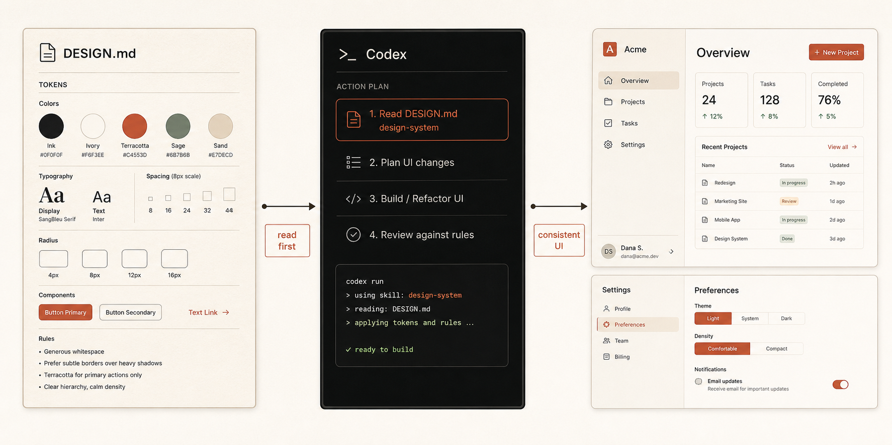
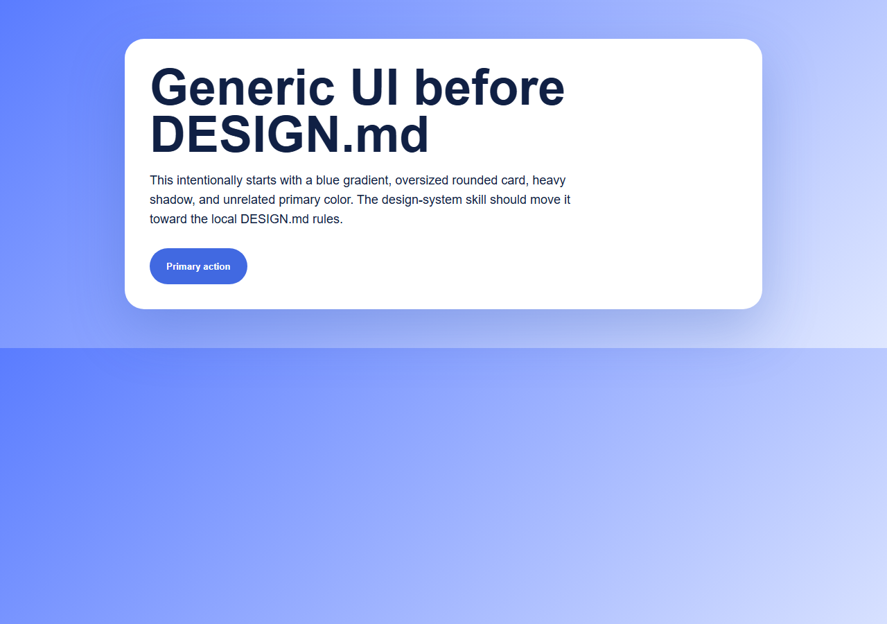
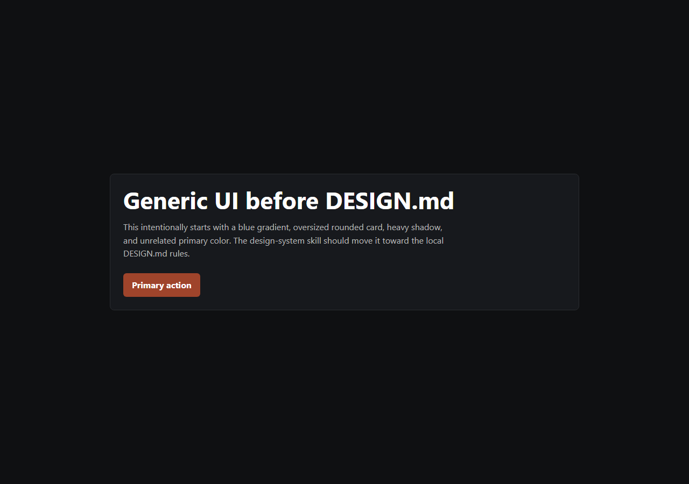

Rules travel with the code
Colors, type, spacing, components, accessibility, voice, and no-go zones stay in one file.
Codex skill + DESIGN.md
Install one skill. Add DESIGN.md. Make every UI pass start from your rules.
Copy it. Paste it into Codex. Restart once.

Why DESIGN.md works
Prompts disappear. Rules remain. Codex knows where to look.
Colors, type, spacing, components, accessibility, voice, and no-go zones stay in one file.
Stop retyping the same visual preferences every time Codex touches a screen.
Give feedback once. Put it in the file. Let future work inherit it.
New pages start from the same source instead of a fresh visual guess.
The habit
Codex can build a decent screen and still invent new spacing, colors, cards, and shadows on the next one.
Codex reads DESIGN.md, applies the tokens, follows the component rules, and checks desktop and mobile.


Run the proof
Install the skill, run the fixture, and watch a generic page move toward the rules.
DESIGN.md.$design-system Make this page follow DESIGN.md.What you get
Use the starter. Replace the taste. Keep the habit.